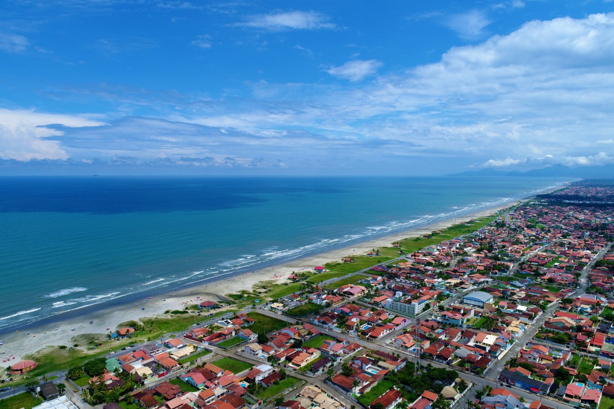
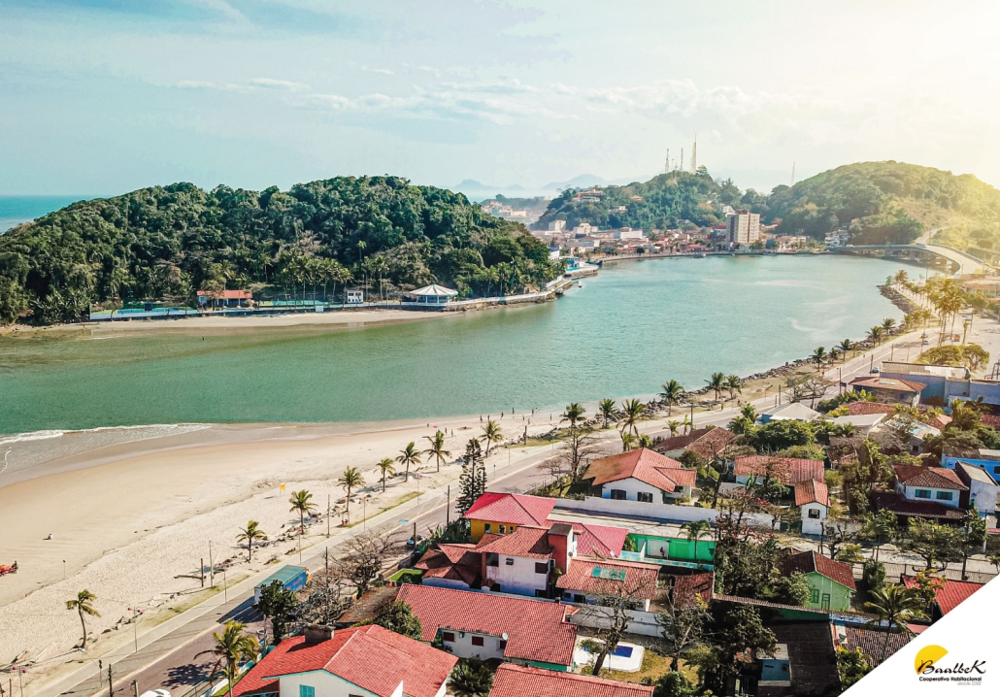

Itanhaém é um convite para descobrir as belezas naturais e a história do litoral paulista. Com praias, rios, áreas de Mata Atlântica e construções históricas, a cidade reúne natureza, cultura e tradição. Seu patrimônio histórico e suas paisagens tornam Itanhaém um destino especial para conhecer e explorar.
Conheça a história, a importância e as riquezas naturais e culturais que fazem Itanhaém única.
Itanhaém possui grande importância histórica e cultural para o litoral paulista. Fundada no século XVI, a cidade participou do processo de colonização do Brasil. Além disso, suas praias, rios e áreas naturais contribuem para o turismo, a preservação ambiental e a economia regional.
Itanhaém está localizada no litoral sul do estado de São Paulo, na Região Metropolitana da Baixada Santista, a aproximadamente 110 km da capital paulista. A cidade é banhada pelo Oceano Atlântico e possui praias, rios e áreas de Mata Atlântica.
Itanhaém é considerada uma das cidades mais antigas do Brasil, com origem no século XVI. Entre seus principais pontos históricos estão o Convento Nossa Senhora da Conceição e a Igreja Matriz de Sant'Anna. A cidade também é conhecida pela Cama de Anchieta, uma formação rochosa associada à tradição sobre o padre José de Anchieta.
A economia de Itanhaém é movimentada principalmente pelo comércio, pelos serviços, pelo turismo e pela pesca. Durante a temporada de verão e os feriados, o aumento do número de visitantes contribui para o funcionamento de hotéis, pousadas, restaurantes e estabelecimentos comerciais.
Itanhaém oferece diversas opções de lazer, como a Praia dos Sonhos, a Praia do Cibratel, a Cama de Anchieta e o Morro do Paranambuco. A cidade também possui atrações históricas, passeios de barco e locais para caminhadas, sendo uma opção interessante para quem procura natureza, cultura e descanso.
Itanhaém apresenta uma grande diversidade de ambientes naturais, incluindo praias, rios, manguezais e áreas de Mata Atlântica. Esses ecossistemas abrigam diferentes espécies de animais e plantas e desempenham um papel importante na preservação da biodiversidade e no equilíbrio ambiental da região.
Descubra alguns dos destinos que valem a visita em Itanhaém.
| Localização | Atração | Indicação | Nota dos visitantes |
|---|---|---|---|
| Centro | Convento Nossa Senhora da Conceição | História, arquitetura e cultura | 9,0/10 |
| Praia dos Sonhos | Cama de Anchieta | Natureza, história e paisagens | 9,0/10 |
| Centro histórico | Igreja Matriz de Sant'Anna | Religião, história e arquitetura | 9,0/10 |
| Praia dos Sonhos | Praia dos Sonhos | Lazer, caminhadas e paisagens | 8,5/10 |
| Cibratel | Praia do Cibratel | Praia, lazer e descanso | 8,5/10 |
| Paranambuco | Morro do Paranambuco | Mirantes, fotografia e natureza | 8,5/10 |
| Centro | Praça Narciso de Andrade | Passeios e patrimônio histórico | 8,0/10 |
| Região do Rio Itanhaém | Rio Itanhaém | Passeios de barco e natureza | 8,0/10 |
| Praia do Suarão | Praia do Suarão | Praia, tranquilidade e lazer | 8,0/10 |